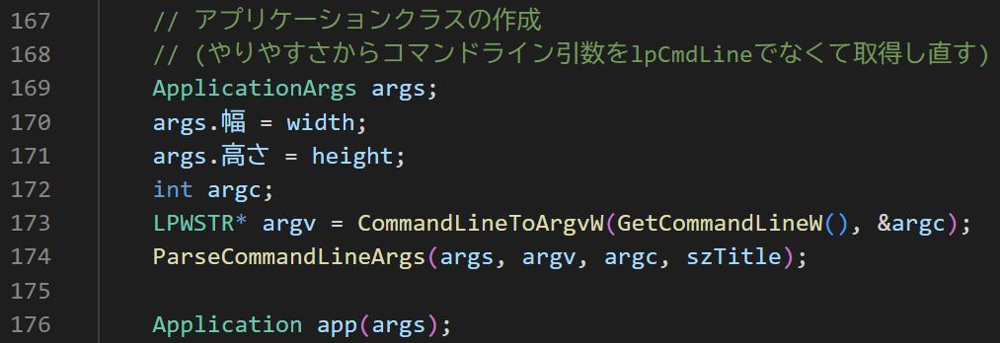
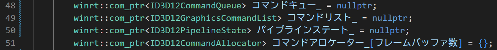
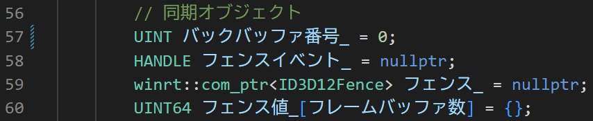
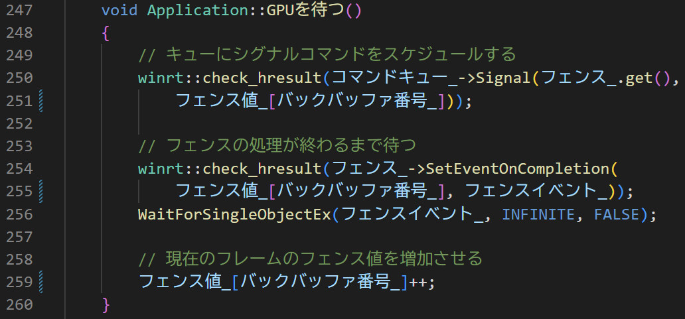
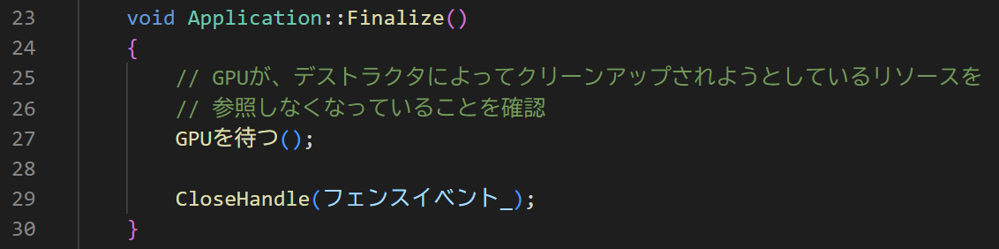

■はじめに
前回はウィンドウをを表示しました。 今回は、前回のプログラムを拡張して、ウィンドウの中をDirectX 12で描画してみます。 と言っても紺一色で塗られるだけなので、面白くないかもしれません。
ソースコードは、GitHubに上げています。
■今回の流れ
今回は、DirectXを動作させるための初期化を行い、簡単な描画として画面クリアを行います。 そのために重要な要素は、下記の通りです。
- DirectX 12デバイスを作成する
- コマンドリストを送れるようにする
- レンダーターゲットを用意する
- 同期のためのフェンスを準備する
- レンダーターゲットを切り替えてフレーム更新する
- メインループから抜けた後の後片付け
これらを少しずつ見ていきたいと思います。
初期化関数の分離
初期化をするInitialize関数ですが、その中で基本的なシステムの初期化を行う「パイプラインの読み込み」と、それらを使ったリソースを処理する「アセットの読み込み」に分離しました(MicrosoftのDirectXのサンプルに習いました。他にも多くの部分がMicrosoftのサンプルに従っています)。
[Application.cpp]
せっかく日本語で勉強しているので、変数や関数を日本語にしてみました。
今回、前回から書き換えて幅や高さをコンストラクタで受け取るようにして、 それら変数をメンバー変数にするようにも変更しています （コンストラクタで受け取る処理は、後から説明します）。
■ DirectX 12デバイスの作成
DirectXを使うには、ディスプレイ アダプターを表すデバイスへのインターフェイスであるID3D12Deviceのオブジェクトが必要になります。
このデバイスを作るには、DXGI(Microsoft DirectX Graphics Infrastructure) のオブジェクトである、
DXGIファクトリーとDXGIアダプターを使います。簡単なデバイスの作成の流れは下記のようになります。
[このコードは使いません]
DXGIは、より低レベルでの表示デバイスの仮想化を行います。将来的にDirectX 13等がでても、DXGIはそのままの形で使われることが期待されています。 DXGIファクトリーは、Factoryパターンから名付けられたものと思われますが、DXGIオブジェクトを作成するためのインターフェイスです。 DXGIアダプターは、ディスプレイ アダプターを表しています。
これらオブジェクトは使い終わったら、解放する必要があります。解放にはRelease関数を使います。
また、作成時にも__uuidof演算子を使ってオブジェクトの型を指定し、その後ろのオブジェクトの変数のアドレスにvoid**キャスト(より正確にはreinterpret_cast)しているのも共通して見られます。
実は、この部分は、COM(Component Object Model)の仕様によるもので、COMの仕様に従った書き方になっています。
DirectX のサンプルでは、Microsoft社の書き方に準拠して、このような書き方（を便利になるマクロを併用して使うのが）が多く見られます。
COMの環境ではCOMのスマートポインターが使われることが多く、その場合は、Release関数を呼び出す必要がなくなります。
だがしかし、最近ではC++/WinRTという新しいライブラリが作られているようなので、こちらを使ってみます。
C++/WinRT を使えるようにする
C++/WinRT を使うには、「winrt/base.h」をインクルードします（今回は、「framework.h」に追加しました）。
[framework.h]
また、DirectX 12のライブラリを使うためのヘッダー「dxgi1_6.h」、「d3d12.h」とライブラリ「dxgi.lib」、「d3d12.lib」を追加しました。
注意点としては、DXGIのヘッダーに「1_6」という数字が付いています。
DXGIの機能拡張はこのように数字を付けて行われています。数字が大きければ新しい機能が使えますし、
逆に数字が小さければ古い機能しか使えません。が、多くのPCで使える可能性が高まります。
今回は、DirectX 12の執筆時点での最新の機能を使うためのヘッダーを使っています。
なお、ライブラリには数字が付いていないので、バージョン管理は気を付けてヘッダに対応する（普通は同じプロジェクトフォルダにある）ライブラリを使いましょう。
C++/WinRT を使うためのもう一つの重要な設定がC++のバージョンです。 C++/WinRT は、C++17を使うことを前提にしているので、プロジェクトのプロパティでC++17以上を選択します。 また、Windows 10のSDKも必要なので、基本的には最新のWindows 10のSDKを導入しましょう。
[プロジェクトのプロパティ]
メンバ変数の追加
C++/WinRT では、スマートポインターのwinrt::com_ptrを使ってCOMオブジェクトを管理します。 winrtは名前空間です。 そのため、デバイスの作成に必要なオブジェクトをメンバ変数としてApplicationクラスに追加します。
[Application.h]

実際のデバイスの初期化
では、実際のデバイスの初期化処理を見てみましょう。
デバイスの初期化はInitializeの「パイプラインの読み込み」で行います。 少し後で説明するのですが、フラグで挙動を制御したくて、それに対応する CreateDXGIFactory2関数を使って、DXGIファクトリーを作成します。
また、アダプターを取得する処理が少し大変なので、別関数にしています。
得られた（ハードウェア）アダプターを使ってCreateDeviceで初期化します。
ここでの、ハードウェアアダプターというのは、GPUのことです。
隠れているWarpデバイスというのが、ソフトウェアでエミュレートされたGPUで、
デバッグ用に使われることが多いアダプターです。
また後で登場します。
[Appliaction.cpp]
ハードウェアアダプターの取得は優先順位をつけて２回調査を行います。
- 高パフォーマンスアダプターの調査
- 高パフォーマンスでない(ハードウェア)アダプターの調査
「高パフォーマンスアダプターの調査」では、QueryInterfaceを使ってIDXGIFactory6に変換して、
IDXGIFactory6::EnumAdapterByGpuPreferenceを使ってアダプターを取得します。
GPUは複数搭載している可能性があるので、それに対応して、アダプターもforループで
複数見つけていきます。
EnumAdapterByGpuPreferenceはIDXGIFactory6から追加された関数で、省電力か高パフォーマンスか、それ以外かを指定してアダプターを取得できます。それ以外の以前に行われていた方法としては、
アダプターの名前を取得して、能力とアプリが求めている要件を見て、アダプターを選択するというのもあります。
今回の処理では、アダプターを見つけた後にソフトウェアでエミュレートするものではないのかという事と、試しにデバイスを作成してみて、エラーが出ないかを確認しています。
よく見ると、D3D12CreateDeviceの引数でデバイスのアドレスを設定する場所がnullptrに設定されていて(322行目)、実体を受け取っていないことが確認できます。
[Appliaction.cpp]
後半の「高パフォーマンスでないアダプターの調査」では、高パフォーマンスでないアダプターの調査で何も見つからなかった時に、残りのアダプターを調査します。
ここでは、IDXGIFactory::EnumAdaptersを使ってデバイスを取得します。
ソフトウェアデバイスでないものので、デバイスを作成してエラーが出ない最初のものを使います。
[Appliaction.cpp]
最後に見つかったアダプターを返り値のアダプターに設定しています(356行目)。
WARPデバイス
WARP(Windows Advanced Rasterization Platform)デバイスは、ソフトウェアでエミュレートされたGPUで、DirectX 10以降に対応しています。ただし、OSのアップデートで機能を増やしており、 必ずしも最新の機能が使えるとは限りません（が、ハードウェアの検証に使われているはずなので、 早急に対応されるでしょう）。 WARPデバイスを使う事で、対応ハードウェアがなくても機能が検証できる可能性が高まります （ただし、速度が遅い可能性は高いです）。
WARPデバイスを使うには、DXGIアダプターを取得する際に、フラグにDXGI_ADAPTER_FLAG_SOFTWAREを指定します。 また、デバイスを作成する際に、D3D_FEATURE_LEVEL_11_0を指定します。
[Appliaction.cpp]
今回はApplicationクラスに「Warpデバイス使用_」というメンバー変数を追加しました。 この変数を使って、WARPデバイスを使うかどうかを制御します。 変数は、コンストラクタで初期化しています。
[Appliaction.cpp]
コンストラクタでは引数の構造体を受け取ってそのメンバーとして直接値を渡しました。
コンストラクタでは重い処理はすべきではないので、メンバー変数を設定するのにとどめています
（ここで幅と高さも設定しています）。
初期化用の構造体「ApplicationArgs」は新たに作りました。
[Appliaction.h]

メイン関数で引数の構造体を渡して、アプリケーションクラスの実体の確保時に変数として渡しています。
[main.cpp]

WARPの設定がされたかどうかはコマンドライン引数を解析して代入しています。 ここでは、DirectX 12のサンプルを参考にして、コマンドライン引数を解析しました。 コマンドライン引数を取得するのに、Windows APIの「CommandLineToArgvW」関数を使いました。 メイン関数の引数にコマンドラインの引数はわたっているのですが、分離が面倒なので、 この関数を使って解析しています。
[main.cpp]
デバッグレイヤー
今まで説明して来なかったものにデバッグレイヤーがあります。 DirectX 12のデバッグレイヤーは、GPUで生じたエラーを表示してくれます。 （シェーダにパッチを当てて、エラーがあればログのバッファに蓄積して、CPU側に送ってくれるらしい）。
デバッグレイヤーを有効にするには、ID3D12Debugインターフェイスを通して「EnableDebugLayer()」呼び出しでデバッグレイヤーを有効にする必要があります。 また、CreateDXGIFactory2の第一引数として、フラグ扱いでDXGI_CREATE_FACTORY_DEBUGを追加することが必要になります。
[Appliaction.cpp]
全画面化の抑制
アダプター関係の処理で他に見るものとして、全画面化の抑制があります。
これは、DXGI が alt-enter シーケンスに応答しないようにして実現します。
全画面化に対応しようとすると、メニューの表示を抑制するとか必要になるので、
対応したいときに別にやりたいと思います。
[Appliaction.cpp]
■ コマンドリストを送れるようにする
デバイスが使えるようになったので、次に行う事は、GPUに対して命令を送ることです。 GPUに対して命令を送るためには、コマンドリストを使います。 コマンドリストは、描画命令を溜めて（実際には、溜める管理を行って）、 コマンドキューと呼ばれるキュー構造を使って溜めた順にGPUに送ります。 ExecrateCommandList命令を使うとGPU対してにコマンドキューに登録されたコマンドリストが送られ、そのコマンドリストに登録された命令が処理されていきます。GPU側では、「エンジン」と呼ばれる単位でコマンドが処理されていきます。 描画用のRender Engine以外に、汎用的な計算を行うためのCompute Engineや、メモリコピーを行うためのCopy Engineなどがあります。今回は、描画用のRender Engineを使います。 また、送るコマンドキューの方にも種類があり、描画用のダイレクトキューや、計算用のキューがあります。こちらも今回は描画用のダイレクトキューしか使いません。
実際の命令はコマンドアロケーターが保持していて、コマンドリストに登録されたコマンドアロケーターにコマンドは追加され、あらかじめGPUにコマンド列を作成しておけばCPUの負担を下げることができるように設計されています。
コマンドリストを作成するには、パイプラインステートというオブジェクトも必要になってきます。 パイプラインステートは、使用するシェーダ等のパイプラインの設定をまとめたものです。 今回は特に何もしないのでnullptrのまま進めていきますが、今後、画面に何かを描画する際には、パイプラインステートを作成して進めていきます。
今回出てくるコマンドキューに関するメンバー関数は、以下の通りです。 上で説明したオブジェクトに関するインターフェイスを確保します。 コマンドアロケーターは、２つ（フレームバッファ数）用意します。 これは、GPUが描画を行っている間に、次のフレームの描画の為のコマンドを平行して積み上げられるように、言い換えるとCPUからの書き込み用とGPUからの読み込み用で分けて、コマンドアロケーターをフレームバッファごとに別々に用意しています。 使い終わったコマンドアロケーターは、その中の物を丸ごとリセットすることができ、次のフレームの準備をするのがフレーム毎で簡単になるので、このような構造が採用されます。
[Appliaction.h]

これらメンバーで最初に生成するのは、コマンドキューです。 D3D12_COMMAND_QUEUE_DESC構造体に生成用のオプションを設定して、コマンドキューの設定を行います。DirectX 12のオブジェクトは、このようにD3D12_***_DESC構造体を使って設定を行うことが多いです。DESCはdescriptionの略なので、日本語だと「記述」や「説明」という感じでしょうか。 コンピュータ用語では記述子という言葉が使われることが多いようなので、今回はその名前を使います。
D3D12_COMMAND_QUEUE_DESC には色々な設定があるのですが、今回は、D3D12_COMMAND_LIST_TYPE_DIRECTを使って、描画用のコマンドキューを作成します。 ここでは、それ以外にもFlagsを設定していますが、これは特に何もない0を設定しています。 多くの場合、必須以外の物はデフォルトの値として0が使われることが多いですが、 それぞれ一度は目を通しておきましょう。 もしかしたら、いつの間にか仕様が追加されているかもしれません。
[Appliaction.cpp]
次に、コマンドアロケーターを生成します。 先ほど説明した通り、2つ用意します。
D3D12_COMMAND_LIST_TYPE_DIRECTを設定して、描画用のコマンドアロケーターを作成します。
[Appliaction.cpp]

そして、コマンドリストの作成です。 コマンドリストは、デバイスから、コマンドアロケーターとパイプラインステートを引数に指定して作成します。パイプラインステートは、今回はnullptrです。 コマンドアロケーターで「バックバッファ番号_」というまだ見ぬ変数を使っていますが、これはどのレンダーターゲット（描画の対象となる画像メモリ）に書き込むかを指定する数字で、もう少し先で説明しますが、とりあえず0です。
[Appliaction.cpp]
これで、コマンドリストを使ってGPUに命令を送る準備が整いました。 あとは、コマンドリストに命令を追加して、GPUに送るだけです。 今回は、画面のクリアを行う命令を追加して、GPUに送っていきます。 画面のクリアは、レンダーターゲットを指定して、その色で画面を塗りつぶす命令です。 先ずは、描画する画面であるレンダーターゲットを作成しましょう。
■ レンダーターゲットを用意する
レンダーターゲットは、GPUが絵を描き込む対象で、絵ができたら、それが画面に表示されます。 レンダーターゲットは、ID3D12Resource（リソースという種類のオブジェクト。DirectXではデータの塊のメモリ）として扱われますが、その中身はテクスチャです。
また、表示と書き込みを切り替えるスワップチェーンも用意する必要があります。 スワップチェーンは、画面の画像の更新機のようなイメージです。 スワップチェーンが、複数のレンダーターゲットを確保していて、それを切り替えることで、画面の表示と書き込みを行います。スワップチェーンも少しづつ拡張が行われていて、今回は、IDXGISwapChain3を使います。IDXGISwapChain3から現在のバックバッファの番号を取得できるようになりました。
他にもヒープや記述子サイズ_という変数が出てきますが、これは、後で説明します。
[Appliaction.h]
スワップチェーンの生成は、IDXGIFactory4のCreateSwapChainForHwndを使って行います。 この関数は、IDXGISwapChain3を返します。 スワップチェーンの設定はDXGI_SWAP_CHAIN_DESC1構造体に行います。 ここで、フレームバッファの枚数やサイズ、フォーマットを設定します。 フォーマットについては色々あるのですが、ここでは標準的なRGB（とついでにα成分）各8ビットのフォーマットを使います。HDRを扱う事になれば、フォーマットの設定が変わっていくでしょう。
[Appliaction.cpp]
IDXGISwapChain3からasメソッドを使って、IDXGISwapChain3を継承したIDXGISwapChain4を取得します。 これで、IDXGISwapChain4からGetCurrentBackBufferIndexを使って、現在のバックバッファの番号が取得できるようになります。
[Appliaction.cpp]
次にレンダーターゲットを作成（正確には情報の取得を）します。 レンダーターゲットの画像としてのメモリは、スワップチェーンと作る時に一緒に作成されます。 レンダーターゲットは、GPUがアクセスしやすいメモリ（普通はビデオメモリ）に作成されるので、CPUから扱えるようにするには、それ用の情報が必要になります。一般的にGPUで作られたリソースは単なるデータの塊で、それがどのような種類の物か、大きさやフォーマットといった情報はリソース自体は持っていません。 リソースの内容を説明するためのオブジェクトとして、デスクリプターが考えられました。 デスクリプターの情報はデスクリプターヒープというオブジェクトでまとめて管理され、デスクリプターヒープに登録されているリソースを指す番号を通して扱われます。
デスクリプターヒープは、デバイスのCreateDescriptorHeapメソッドを使って作成します。 デスクリプターヒープには種類があって、今回は、レンダーターゲットビュー用のデスクリプターヒープを作成します。 「ビュー」はリソースをどのように解釈するのかを示す情報です。同じ画像のリソースでも、ビューによって、その画像をどのように見るかが変わり、レンダーターゲットビューは画像を描画対象として見ますが、シェーダリソースビューという別のビューを使うと画像をシェーダで主に読み込むためのテクスチャとして扱うようになります。
今回、レンダーターゲットは２枚使いますが、このように複数のリソースを扱う場合は、デスクリプターヒープのディスクリプターのアドレスを指定するのに、ディスクリプターハンドルインクリメントサイズというディスクリプターの大きさを所得して、その分だけディスクリプターのアドレスを動かしながらデータを処理していきます。
[Appliaction.cpp]
レンダーターゲットの画像のメモリを紐づけるために、デスクリプターの実体としてレンダーターゲットビューを作成します。 レンダーターゲットの画像のメモリ自体は、ID3D12SwapChain::GetBufferメソッドで番号を指定して取得できます。 このメモリを使って、PUからアクセスする際のアドレスであるハンドルの位置に、D3D12Device::CreateRenderTargetViewメソッドを使ってレンダーターゲットビューを作成します。 ハンドルは、デスクリプターヒープからID3D12DescriptorHeap::GetCPUDescriptorHandleForHeapStartで取得できます。 ただし、このアドレスは、最初のディスクリプターのアドレスを指します。２つめのディスクリプターのアドレスは、ディスクリプターハンドルインクリメントサイズを使ってハンドルの場所を動かして取得します。 この辺は、かなり低レベルな処理になっていて、DirectXが直接ハードウェアを操作することを感じられる部分と言えるでしょう。
[Appliaction.cpp]
また、ハンドルを取得する際にCD3DX12_CPU_DESCRIPTOR_HANDLEを使いました。接頭後がCD3DX12で始まるものは、DirectX 12の物ではなく、「D3DX12 ライブラリ」の物です。D3DX12 ライブラリは、DirectX 12のラッパーライブラリで、DirectX 12の処理を簡単にするためのライブラリです。DirectX 12の処理は、かなり低レベルな処理が多いので、ラッパーライブラリがあると、処理が楽になります。 ただし、D3DX12 ライブラリは Windows SDKには含まれていません。 以前は、DirectX Tool Kit という形で配布されていましたが、現在は、GitHubの DirectX Headersで配布されています。
D3DX12 ライブラリの組み込み方は幾つかあるのですが、今回は、gitのサブモジュールとして組み込んでみます。srcフォルダ以下にD3DX12 ライブラリを組み込んでみます。srcフォルダでgit submoduleコマンドを使って、自分のプロジェクトに取り込んで、いつでも最新のバージョンが取得できるようにします。
[ターミナル]
そうすると、srcフォルダにD3DX12 ライブラリのディレクトリが作成されます。
[ファイルエクスプローラー]
DirectX-Headersディレクトリの「include/directx」フォルダに「d3dx12.h」ヘッダーがあってこれを使います。 ヘッダーファイルを読めるようにするために、プロジェクトのプロパティの「C/C++」の「全般」の「追加のインクルードディレクトリ」に「$(SolutionDir)DirectX-Headers/include/directx/」を追加します。
[ファイルエクスプローラー]
ここまで来れば、後はヘッダーをインクルードするだけで使えます。
[Appliaction.cpp]
■ 同期のためのフェンスを準備する
あと、必要なのは、CPU側で次の処理に移る際に、メモリを書き換えて良いかGPUの処理が終わるのを待つためのフェンスです。 この説明は、3D Game Engine Programmingさんの図以上のものが用意できなかったので、引用させてもらいます。
[From Jeremiah van Oosten, 3D Game Engine Programming.]

フェンスはSignalでフレーム番号を飛ばしておくと、それまでのGPUの処理が終わった後で、フェンスのオブジェクトに指定された値（フレーム番号）を設定します。 CPU側では、そのフレーム番号の処理が終えた後の処理に進みたい場合に、フェンスの値が指定された値になったらイベントで起こしてもらうように待ちます（実装としては、WaitForSignalObjectExを使います）。起きたらフレーム番号のGPU処理はおえているので、そのフレームで使われていたGPUメモリを書き換えても問題ありません。 フレームバッファは2つのダブルバッファにしているので、フェンスは2つ用意して、ひとつ前のフレームの処理が終わったのかを確認して作業を進めることになります。
フェンスを使うための準備として必要なメンバー変数を確保します。 フェンスのインターフェイスであるID3D12Fenceのオブジェクト、通知に使うイベントのハンドル、それぞれのバックバッファで使うフェンスの値を保持する変数と、現在どちらに書き込むのかを決めるバックバッファ番号の変数を用意します。
[Appliaction.h]

バックバッファ番号は、既に作られたスワップチェーンのオブジェクトから取得できます。
[Appliaction.cpp]
それ以外のオブジェクトとして、フェンスはデバイスを使って作成できます。 フェンスの作成時にフェンスの値が必要ですが、両方のフェンスの値は0で初期化して大丈夫なようです。ただし、フェンスを作ったら次に設定する値のために、現在のバックバッファの方のフェンスの値をインクリメントしておきます。
また、CreateEventで寝た後に起こしてくれるイベントを作成します（イベントハンドルを受け取ります）。
その後、「GPUを待つ」という処理を入れました。これは、フェンスの値が指定した値になるまで待つ処理で、ここでは、今まで設定したものが、きちんとGPUにアップロードされるのを待つのに使います。 今回はそれほど重いデータは扱ていないので、ほとんど意味がないのですが、データが大きいと、転送が終わっていないのに読み込もうとしてエラーが起きたりします。
[Appliaction.cpp]
GPUを待つ処理では、シグナルをコマンドキューに追加して、それまでのコマンドが終わったら引数のフェンスの値を設定するようにします。 その後、フェンスのSetEventOnCompletionメソッドで、フェンスの値が指定した値になったらフェンスイベントを起こすように設定します。 そしたら、フェンスイベントが発生するまで寝ます。 最後に、次にフェンスを使うときのためにフェンスの値をインクリメントしておきます。
[Appliaction.cpp]

■ レンダーターゲットを切り替えてフレーム更新する
フレーム毎のアップデート
それでは、毎フレームの処理を書いていきます。 毎フレームの処理では、コマンドリストに描画命令を書き込んで、それをGPUに送ります。GPUに送るメソッドがExecuteCommandListsです。複数のコマンドリストを送ることもできますが、今回は1つだけ実行します。 その後のPresent処理で、それまでに描いた画像を画面に表示します。最後に、GPUがリソースを使ったことを確認するためのフェンス処理である「次のフレームに行く」を実行します。
[Appliaction.cpp]
コマンドリストの記録
「コマンドリストの記録」では、最初にコマンドリストをリセットします。 実際のコマンドはコマンドアロケーターに入っているので、コマンドアロケーターもリセットします。
[Appliaction.cpp]
バックバッファをレンダーターゲットに設定します。 最初に、レンダーターゲットのリソースとしての状態を表示用から書き込み用に変更します。 これは、レンダーターゲットを表示用に設定すると、GPUがレンダーターゲットを読み込むことができなくなるためです。 その後、OMSetRenderTargetsメソッドで、レンダーターゲットを設定します。OMSetRenderTargetsメソッドの引数は、レンダーターゲットビューのハンドルを指定します。 レンダーターゲットビューのハンドルは、デスクリプターヒープからバックバッファ番号だけずらしたものとして取得します。
[Appliaction.cpp]
そうしたら、レンダーターゲットをクリアします。 レンダーターゲットをクリアするには、ClearRenderTargetViewメソッドを使います。 このメソッドは、レンダーターゲットビューのハンドルと、クリアする色を指定します。 今回は、RGBAの色を指定して、レンダーターゲットを塗りつぶします。0が一番暗く、1が一番明るい色になります。 このコードが今回唯一の描画命令と言えるでしょう。
[Appliaction.cpp]
描き込み終わったら、バックバッファを表示状態に設定します。 これは、レンダーターゲットを描画用にした設定と反対の設定になります。
また最後にコマンドリストをクローズして、GPUに送れるようにします。 これで、「コマンドリストの記録」は終了です。
[Appliaction.cpp]
次のフレームに行く
アップデート処理の最後に次の処理に行く前の待ちの作業を行います。
GPUで待つのと同じようにフェンスを使って処理が終えるまで待ちます。
単に待つ処理との違いは２枚のバックバッファを考慮するという事です。
Present処理を追えると、次に取得できるバックバッファの番号は次に書き込むバックバッファの番号になります。
処理が先に進めないのは、この新たなバックバッファでの処理が終わっていない場合です。
このバックバッファの番号でのフェンスの値を確認して、それが現在の値になっていないようならWaitForSIngleObjectExを使ってイベントが起こしてくれるまで休みに入ります。
休みから抜けたら、フェンスの値をインクリメントします(個人的には、バックバッファのそれぞれで同じ値を待つことがあって良いのかは疑問なのですが、サンプルの記述はこうなっています…)。
[Appliaction.cpp]
メインループから抜けた後の後片付け
残りの処理は、メインループから抜けた後の終了処理です。 各種ポインタのオブジェクトはcom_ptrのスマートポインタで自動的に解放されます。 イベントだけ独自で解放しなくてはならないので、CloseHandleを読んで解放します。 ただし、その他のリソースがGPUで使用しようとしていたのに解放しようとするとエラーになるので、最初にGPUが処理を終えるのを待ってから解放処理を行います。
[Appliaction.cpp]

■ さいごに
下準備としては、これで終わりでしょうか。 次回は、ポリゴンを表示したいです。